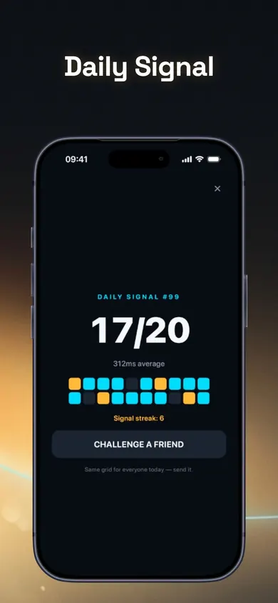

Are the units the same?
A task result such as 17 out of 20 is not the same measure as an overall 0-100 index. Keep the result label beside the number. Do not turn different tasks into a common ranking just because both can be written as percentages.
Before treating a different number as a change in your focus, check what you are comparing. Start with these five checks.
Explore Attention Age freeFor iPhone · iOS 18+ · Optional in-app purchases
By Honest Little Apps, Attention Age's publisher.
Focus games can produce different kinds of results: task scores, response times, category scores or a combined index. A change becomes hard to interpret when you have also changed the task, device or way you played.
This page helps you organize a comparison. It does not test your attention, assign an age or explain a personal health concern. The checklist is a practical preparation aid, not a validated assessment.
A task result such as 17 out of 20 is not the same measure as an overall 0-100 index. Keep the result label beside the number. Do not turn different tasks into a common ranking just because both can be written as percentages.
Attention Age's listing warns that scores commonly rise with familiarity. Better performance at the practiced tasks does not, by itself, establish a broader improvement in attention. Keep your earlier attempts in view.
Human Benchmark notes that its browser reaction-time test is affected by computer and display latency. That is a reason to be cautious about comparing results across hardware, not a numerical correction you can apply to an Attention Age score.
Write down obvious differences: an interruption, a changed task mode, or a first attempt at unfamiliar instructions. This is an editorial record-keeping suggestion. It cannot calculate how many points any difference caused.
Attention Age describes its current Attention Index as performance on its specific tasks on your device. It is not an age, population percentile, diagnosis or clinical test. The app name does not change that limit.
Tick what you have checked. This only records preparation on this page; it does not judge your readiness or generate an attention score.
Use the checklist to make your next comparison easier to describe.
No account, personal details or storage on this webpage. Checks reset when you reload. Copying produces a preparation note, not a test result.
Each square records one flash. Paste a shared result to see how many signals the player caught and how many decoys they let pass. Or play today’s 20-second Daily Signal first.
Paste one grid at a time. The text stays on this page.
Both rounds use the same 5-by-5 layout size and the same number of targets. Select every filled diamond you notice, check the round, and compare the descriptive counts. There is no timer, age score, percentile or ability label.
Round 1 of 2. Select each filled diamond (◆). Leave outlined diamonds (◇) unselected.
Select the filled diamonds, then check the round.

The current app includes a free Daily Signal challenge, core practice tasks and basic focus-timer sessions. Optional Pro adds further drills and longer timer options.
Use the app's result descriptions and history to understand what you completed. This webpage does not import, score or store app results.
Open Attention Age in the App StoreFree download with optional subscriptions. Check the current offer before purchasing.
Imagine writing only, "My score went down." Now imagine keeping the task name, device, date and a note that you were interrupted. The second record gives you more context without pretending to explain the cause.
This is an example of documentation, not evidence that interruptions account for a particular change. Avoid repeatedly playing until you get a number you prefer and treating that single best attempt as the whole story.
A useful record includes what happened, not only the result you want to share. Read the scoring notes, keep the task labels, and use the app for its stated purpose.
If you are concerned about your concentration in everyday life, a game score is not an assessment of the cause. Discuss the concern with a qualified professional rather than trying to diagnose it through repeated tests.
No. The app states that the index is not compared with a population. A 0-100 display is not automatically a percentile.
They are different tasks and scoring systems. Use each tool's own explanation; do not treat the results as interchangeable.
No. It only means you checked four preparation items. The checklist does not inspect how you performed or determine whether your result is valid.
See the app's current listing and its own scoring explanation. The publisher also has a guide to what attention-test scores mean.
If short, self-contained attention challenges appeal to you, try Attention Age's free activities and read the result labels before comparing sessions.
Try Attention Age on iPhoneFor the moment after a notification pulls you away from a document or spreadsheet, use Return Signal to build a practical restart plan. It helps you mark your place and choose one next action; it does not score your attention.
Published by Honest Little Apps, which publishes Attention Age. The checklist and comparison-note example are original editorial aids. No diagnosis, broader cognitive benefit or scientific validation is claimed. This page uses no analytics or cookies; hosting infrastructure may process standard request logs.